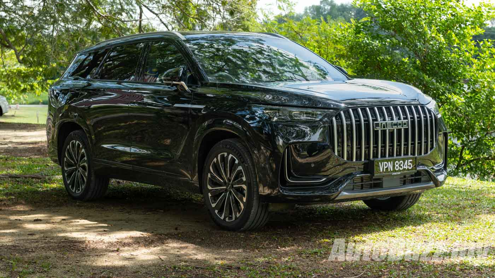

ARDIS — singkatan dari Automatic Real-time Driving Intelligent System — adalah sebuah revolusi dalam teknologi 4WD. Berbeda dari sistem penggerak empat roda konvensional yang mengharuskan pengemudi beralih secara manual, ARDIS melakukan segalanya secara otomatis dalam hitungan milidetik, menyesuaikan distribusi torsi ke setiap roda sesuai kondisi jalan secara real-time.
Dikembangkan secara eksklusif untuk JAECOO J8 SHS, teknologi ARDIS memanfaatkan kecerdasan buatan (AI) dan jaringan sensor canggih untuk memberikan traksi optimal di setiap kondisi — dari jalanan Jakarta yang tergenang banjir hingga tanjakan curam di pegunungan.
Artikel ini menjelaskan secara mendalam bagaimana ARDIS bekerja, apa saja mode berkendaranya, dan mengapa teknologi ini menjadi keunggulan kompetitif utama JAECOO J8 di pasar SUV Indonesia.
Apa Itu ARDIS?
ARDIS adalah otak di balik kemampuan off-road dan all-weather JAECOO J8. Sistem ini terdiri dari tiga komponen utama: jaringan sensor 360°, unit pemroses AI, dan aktuator distribusi torsi per roda yang bekerja secara independen.
💡 Cara Kerja ARDIS
- Sensor 360° memantau kondisi jalan, kecepatan, sudut kemudi, dan akselerasi secara terus-menerus
- Algoritma AI memproses data sensor dan menentukan distribusi torsi optimal dalam milidetik
- Distribusi Torsi Real-time ke setiap roda secara independen berdasarkan kebutuhan traksi
- Response Time 0ms — respons instan tanpa jeda, jauh lebih cepat dari reaksi manusia

4 Mode Berkendara ARDIS
ARDIS hadir dengan empat mode berkendara yang dapat dipilih sesuai kondisi jalan. Setiap mode mengoptimalkan distribusi torsi, respons gas, dan sistem traksi untuk performa terbaik.
Normal Mode
Penggunaan Sehari-hari
- Distribusi torsi optimal 60:40 depan-belakang
- Efisiensi BBM terjaga maksimal
- Kenyamanan berkendara optimal di perkotaan
Sport Mode
Tol & Pegunungan
- Distribusi torsi agresif 40:60 depan-belakang
- Respons gas lebih tajam dan responsif
- Handling presisi di kecepatan tinggi
Snow Mode
Jalan Licin & Basah
- Distribusi torsi merata 50:50 semua roda
- Throttle response lebih halus dan terkontrol
- Mencegah selip di jalan licin dan basah
Mud/Off-road Mode
Medan Berat
- Torsi maksimum ke semua empat roda
- Traction control agresif untuk medan berlumpur
- Optimal untuk jalan berbatu dan berlumpur
ARDIS di Kondisi Jalan Indonesia
Indonesia memiliki kondisi jalan yang sangat beragam. ARDIS dirancang untuk menghadapi semua tantangan ini dengan cerdas dan efisien.
Banjir & Genangan Jakarta
Mode Snow ARDIS mendistribusikan torsi merata untuk mencegah selip saat melewati genangan air, sementara sensor mendeteksi perubahan traksi secara instan.
Jalan Berlubang
ARDIS menyesuaikan distribusi torsi secara real-time saat roda kehilangan kontak tanah, menjaga stabilitas dan kenyamanan berkendara.
Jalan Tol Lurus
Normal Mode mengoptimalkan BBM dengan distribusi 60:40 untuk perjalanan tol yang efisien dan nyaman di kecepatan tinggi.
Tanjakan (Puncak, Dago)
Sport atau Off-road Mode memberikan torsi lebih ke roda belakang untuk menaklukkan tanjakan curam dengan aman dan percaya diri.
ARDIS vs Sistem 4WD Konvensional
| Aspek | ARDIS (JAECOO J8) | Konvensional |
|---|---|---|
| Response Time | 0ms (Instan) | 100–200ms (Manual) |
| Switching Mode | Otomatis AI | Manual oleh pengemudi |
| Efisiensi BBM | Optimal sesuai kondisi | Konsumsi tetap tinggi |
| Traction Control | Per-roda real-time | Sistem terpisah |
Bagikan Artikel Ini
Rasakan ARDIS di Test Drive
Teknologi ARDIS hanya bisa benar-benar dirasakan saat Anda menyetir sendiri. Booking test drive JAECOO J8 SHS ARDIS sekarang!
Booking Test Drive ARDIS